기계가공조립기능사 (2002-01-27 기출문제)
1과목: 기계가공법 및 안전관리
1. 공작기계의 기본운동에 해당되지 않는 것은?
- 절삭운동
- 치핑운동
- 이송운동
- 위치조정운동
(정답률: 85%)

2. 바이트의 공구각에 대한 설명 중 옳은 것은?
- 옆면경사각 : 바이트 중심선에 수직한 단면 위에 주절삭날면이 수평면과 이루는 각
- 앞면여유각 : 윗면 여유각을 측정하는 면 위에서 바이트 전면이 절삭면과 이루는 각
- 옆면절삭날각 : 주절삭날이 바이트 자루의 전면과 이루는 각
- 앞면절삭날각 : 앞절삭날이 바이트 자루의 측면에 수평한 선과 이루는 각
(정답률: 44%)
3. 지름 120 mm, 길이 340 mm인 중탄소강 둥근막대를 초경합금 바이트를 사용하여 절삭속도 150 m/min으로 절삭하고자 할 때, 그 회전수는?
- 398 rpm
- 410 rpm
- 430 rpm
- 458 rpm
(정답률: 58%)
4. 선반에서 사용되는 맨드릴의 종류 중 틀린 것은?
- 팽창식 맨드릴
- 조립식 맨드릴
- 방진구식 맨드릴
- 표준 맨드릴
(정답률: 49%)
5. 어미나사가 4산/인치인 선반에서 공작물의 피치가 10㎜인 나사를 깎을 때의 변환기어 잇수는?
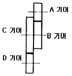
- A=60, B=30, C=100, D=127
- A=60, B=30, C=127, D=100
- A=30, B=60, C=127, D=100
- A=30, B=100, C=127, D=200
(정답률: 39%)
6. 수평 밀링머신 가공사항으로 틀린 것은?
- 가능한 한 공작물은 깊게 바이스에 고정시킨다.
- 하향 절삭시 뒤틈제거 장치를 반드시 풀어 놓는다.
- 커터는 나무등 연질재료로 받쳐 놓는다.
- 반드시 보호 안경을 착용하며 장갑은 끼지 않는다.
(정답률: 72%)
7. 연삭숫돌의 입도를 선택하는 조건 중 틀린 것은?
- 거칠게 연삭을 할 때에는 거친 입도
- 접촉면이 작을 때에는 거친 입도
- 경도가 높은 일감에는 거친 입도
- 연성재료에는 거친 입도
(정답률: 54%)
8. 같은 평면 안에 있는 다수의 구멍을 동시에 드릴가공할수 있는 드릴링 머신은?
- 다두 드릴링 머신
- 레이디얼 드릴링 머신
- 다축 드릴링 머신
- 직립 드릴링 머신
(정답률: 62%)
9. 브로칭 머신으로 가공할 수 없는 것은?
- 스플라인 홈
- 다각형의 구멍
- 둥근 구멍안의 키홈
- 베어링용 볼
(정답률: 67%)
10. 일반적으로 바이스의 크기를 나타내는 것은?
- 바이스 전체의 중량
- 물건을 물릴 수 있는 조오의 폭
- 물건을 물릴 수 있는 최대 거리
- 바이스의 최대 높이
(정답률: 59%)
11. 다음 중 광학적으로 길이의 미소범위를 확대하여 측정하는 것은?
- 버니어캘리퍼스
- 옵티미터
- 마이크로 인디케이터
- 사인바아
(정답률: 70%)
12. 선반 작업 중 주의사항으로 틀린 것은?
- 작업 중 장갑을 끼지 않는다.
- 작업 중 회전을 최대로 한다.
- 척에 손이 걸리지 않게 작업을 해야 한다.
- 작업 중 소매가 긴 것은 입지 않도록 한다.
(정답률: 89%)
13. 밀링머신의 부속장치가 아닌 것은?
- 분할대
- 래크절삭장치
- 아버
- 에이프런
(정답률: 69%)
14. KS규격 안전색채 사용통칙에서 지시, 의무적 행동을 표시하는 기본색은?
- 주황
- 파랑
- 빨강
- 자주
(정답률: 72%)
15. 절삭유의 작용이 아닌 것은?
- 방습작용
- 냉각작용
- 윤활작용
- 세척작용
(정답률: 85%)
16. 수기가공시 금긋기용 공구에 해당되지 않는 것은?
- V-블럭
- 서피스게이지
- 직각자
- 스크레이퍼
(정답률: 47%)
17. 하향 밀링 절삭의 장점이 아닌 것은?
- 가공면이 깨끗해서 다듬질 절삭에 좋다.
- 일감의 고정이 간편하다.
- 날의 마멸이 적고 수명이 길다.
- 백래시가 자연히 제거된다.
(정답률: 79%)
18. 전등 스위치가 있을 때, 안전상 가장 위험한 곳은?
- 머신유 저장소
- 카바이드 저장소
- 방청유 저장소
- 절삭유 저장소
(정답률: 57%)
19. 다음 공작기계 중 급속귀환 운동을 하지않는 기계는?
- 세이퍼
- 플레이너
- 밀링
- 슬로터
(정답률: 56%)
20. 호닝(honing)에 관한 설명으로 틀린 것은?
- 호닝속도는 일감의 표면을 통과하는 입자의 속도를 나타낸다.
- 호운에 일감의 축방향으로만 진동을 주어 작업한다.
- 호운(hone)이라는 회전공구로 정밀 다듬질하는 방법이다.
- 호닝숫돌은 연삭입자를 결합제로 결합하여 성형한 것이다.
(정답률: 61%)
2과목: 기계재료 및 요소
21. 밀링에서 지름이 50㎜인 커터를 사용하고, 커터의 회전수를 100 rpm으로 하면 절삭속도는 약 몇 m/min 인가?
- 15.7
- 314
- 5
- 31.4
(정답률: 66%)
22. 스플라인 키홈작업에 전용으로 사용하는 것은?
- 호닝머신
- 브로칭머신
- 호빙머신
- 래핑머신
(정답률: 61%)
23. 셰이퍼를 직립형으로 한 공작기계는?
- 바렐연마기
- 호닝 머신
- 브로칭 머신
- 슬로터
(정답률: 54%)
24. 수치제어 공작기계의 특징이 아닌 것은?
- 소품종 다량 생산에 적합하다.
- 가공하려는 부품의 모양이 복잡할수록 그 위력을 발휘한다.
- 1 로트의 생산 갯수는 적어도, 로트 생산 횟수가 많으면 유리하다.
- 균질의 제품을 얻는다.
(정답률: 41%)
25. 작은나사 머리 및 볼트의 머리를 일감에 묻히게 하기 위한 턱이 있는 구멍뚫기의 가공작업은?
- 카운터 스크루
- 카운터 보링
- 스폿 페이싱
- 보링
(정답률: 68%)
26. 손에 의하여 기계를 가공할 때 가장 중요한 것은?
- 신뢰성
- 견고성
- 안전성
- 기민성
(정답률: 89%)
27. 절삭 공구재료의 구비조건 중 틀린 것은?
- 내 마멸성이 좋을 것
- 성형성이 좋을 것
- 고온에서 경도가 높고 취성이 클 것
- 피삭재보다 단단하고 인성이 있을 것
(정답률: 78%)
28. 다음 그림과 같이 선반에서 공작물을 테이퍼로 절삭 가공할 때 심압대의 편위 거리를 30mm로 하면 테이퍼 부의 길이 ℓ 은 몇 mm 인가?
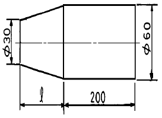
- 140
- 180
- 200
- 220
(정답률: 43%)
29. 밀링작업에서 할 수 없는 것은?
- 나선 절삭
- 바깥지름 절삭
- 기어 절삭
- 키이홈 절삭
(정답률: 49%)
30. 만능 밀링머신에서 비틀림 홈을 제작할 때 사용하는 장치는?
- 분할대
- 회전 바이스
- 회전대
- 앵글 플레이트 장치
(정답률: 39%)
31. 선반가공에서 절삭속도를 v(m/min), 회전수를 n(rpm)이라면 일감의 지름 d(mm)의 계산식은? (단, π = 3 으로 계산한다)
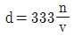
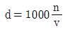
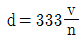
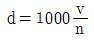
(정답률: 49%)
32. 드릴링 머신에 의하여, 주조된 구멍이나 이미 뚫은 구멍을 필요한 크기나 정밀한 치수로 넓히는 작업은?
- 드릴링(Drilling)
- 보링(Boring)
- 태핑(Tapping)
- 엔드밀(End milling)
(정답률: 87%)
33. 선반작업의 안전관리사항으로 적절하지 않은 것은?
- 회전 중인 공작물의 가공면에 손을 대지 않는다.
- 칩의 발산에 대비하여 보안경을 착용한다.
- 기어를 변속할 때는 원활한 변속을 위해 저속상태에서 변속한다.
- 긴 공작물이 기계 밖으로 돌출되면 붉은 헝겊을 부착하여 위험표시를 한다.
(정답률: 74%)
34. 사인바(sine bar)에 대한 설명 중 틀린 것은?
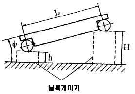
- 블록게이지 등을 병용하고 3각함수 사인(sine)을 이용하여 각도를 측정하는 기구이다.
- 사인바의 호칭치수는 보통100㎜ 혹은 200㎜ 이다.
- 45° 보다 큰 각을 측정할 때에는 오차가 적어진다.
- 정반 위에서 정반면과 사인봉과 이루는 각을 표시하면 sin ø = (H - h)/ L 식이 성립한다.
(정답률: 75%)
35. 탄성숫돌 바퀴는 유기질의 결합제로 사용해 만든 것인 데 결합제와 기호의 연결이 잘못 된 것은?
- 셀락 : E
- 고무 : R
- 레지노이드 : B
- 비닐 : C
(정답률: 56%)
36. 회전수를 적게하고 빨리 조이고 싶을때 가장 유리한 나사는?
- 1줄나사
- 2줄나사
- 3줄나사
- 4줄나사
(정답률: 63%)
37. 지름 60㎜인 구동마찰차의 회전수를 1/3로 감소시키는데 사용할 피동마찰차의 지름은 얼마인가?
- 200㎜
- 270㎜
- 180㎜
- 160㎜
(정답률: 80%)
38. 황동의 인장 강도와 연신율은 각각 아연(Zn) 몇 % 정도에서 최대가 되는가?
- 20, 10%
- 30, 20%
- 40, 30%
- 50, 40%
(정답률: 61%)
39. 마찰 클러치 설계시 고려사항이 아닌 것은?
- 원활히 단속할 수 있도록 한다.
- 소형이며 가벼워야 한다.
- 열을 충분히 제거하고, 고착되지 않아야 한다.
- 접촉면의 마찰계수가 작아야 한다.
(정답률: 62%)
40. 백래시(back lash)가 적어 정밀 이송 장치에 많이 쓰이는 나사는?
- 너클 나사
- 볼 나사
- 톱니 나사
- 미터 나사
(정답률: 66%)
3과목: 기계제도(절삭부분)
41. 다음 중 탄소 함유량이 가장 많은 기계구조용 탄소강은?
- SM15CK
- SM30C
- SM40C
- SM50C
(정답률: 75%)
42. 주철에 대한 설명으로 틀린 것은?
- 주조성이 양호하다.
- 내마모성이 우수하다.
- 강보다 탄소함유량이 적다.
- 인장강도보다 압축강도가 크다.
(정답률: 55%)
43. Ni- Fe 합금이 아닌 것은?
- 모넬메탈(monel metal)
- 엘린바(elinvar)
- 인바(invar)
- 플라티나이트(platinite)
(정답률: 38%)
44. Young계수(E)에 대하여 옳게 설명한 것은?
- 수직응력을 변형률로 나눈값
- 변형률을 수직 응력으로 나눈값
- 변형률을 전단 응력으로 나눈값
- 전단응력을 전단 변형률로 나눈값
(정답률: 29%)
45. 2000㎏f의 인장하중이 작용하는 원형단면의 봉에 인장응력100㎏f/cm2이 발생한다. 환봉의 지름은 약 얼마인가?
- 6.5cm
- 6cm
- 5.5cm
- 5cm
(정답률: 44%)
46. 다음 중 동력 전달 방식이 다른 것은?
- 기어
- 벨트
- 체인
- 로프
(정답률: 61%)
47. v 벨트의 속도비는 보통 얼마 정도인가?
- 1 : 7
- 2 : 4
- 7 : 10
- 9 : 14
(정답률: 54%)
48. TTT곡선을 이용하여 일정 시간 동안 열처리하는 방법은?
- 항온 열처리
- 표면 열처리
- 심냉 처리
- 풀림 열처리
(정답률: 61%)
49. 금형제작용 및 공구 재료로 사용되는 주조 경질 합금의 대표적인 재료는?
- 스텔라이트(Stellite)
- 고속도강(SKH)
- 세라믹(Ceramics)
- 합금 공구강(STS)
(정답률: 33%)
50. 재료의 비례 한도 내에서 응력과 변형률의 관계로 옳은 것은?
- 반비례한다.
- 비례한다.
- 변화가 없다.
- 교차한다.
(정답률: 60%)
51. 다음 보기의 도면에서 A ~ D의 선의 용도에 의한 명칭 중 틀린 것은?
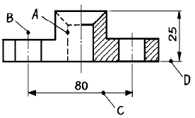
- A : 숨은선
- B : 중심선
- C : 치수선
- D : 지시선
(정답률: 78%)
52. 일반적인 도면의 표제란 위치로 가장 적당한 것은?
- 오른쪽 중앙
- 오른쪽 위
- 오른쪽 아래
- 왼쪽 아래
(정답률: 83%)
53. 다음 도면에서 (10)의 치수에서 ( ) 가 뜻하는 것은?
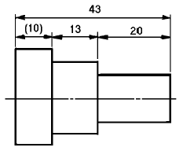
- 참고치수
- 소재치수
- 중요치수
- 비례척이 아닌 치수
(정답률: 82%)
54. 끼워맞춤에서 공차(公差,tolerance)란?
- 최대 허용 치수에서 최소 허용치수를 뺀 수치
- 최대허용치수에서 기준치수를 뺀 수치
- 기준치수에서 최소허용치수를 뺀 수치
- 실제치수에서 기준치수를 뺀 수치
(정답률: 67%)
55. 표면의 결 지시기호가
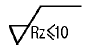
일 경우 올바른 해독은?- 최대 높이 거칠기가 10mm 이하
- 최대 높이 거칠기가 10㎛ 이하
- 십점 평균 거칠기가 10mm 이하
- 십점 평균 거칠기가 10㎛ 이하
(정답률: 37%)
56. 테이퍼값이 1/20 인 보기와 같은 그림에서 X 의 값은 얼마인가? (보기)
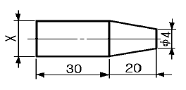
- φ5
- φ6
- φ8
- φ10
(정답률: 35%)
57. 보기와 같이 3각법으로 투상한 정면도와 평면도에 가장 적합한 우측면도는?
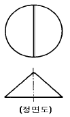
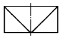
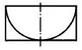
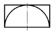
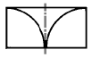
(정답률: 51%)
58. 보기 입체도의 화살표 방향 투상도면으로 적합한 것은?
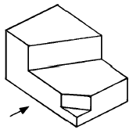
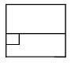
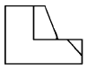
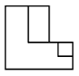
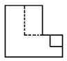
(정답률: 76%)
59. 그림과 같은 손잡이를 스케치 하려고 할 때 다음 중 가장 적합한 방법은?
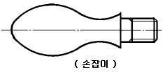
- 간접 모양뜨기
- 직접 모양뜨기
- 프린트법
- 사진 스케치법
(정답률: 40%)
60. 탄소 주강품을 나타내는 재료 기호는?
- GC
- SC
- SF
- GCD
(정답률: 57%)